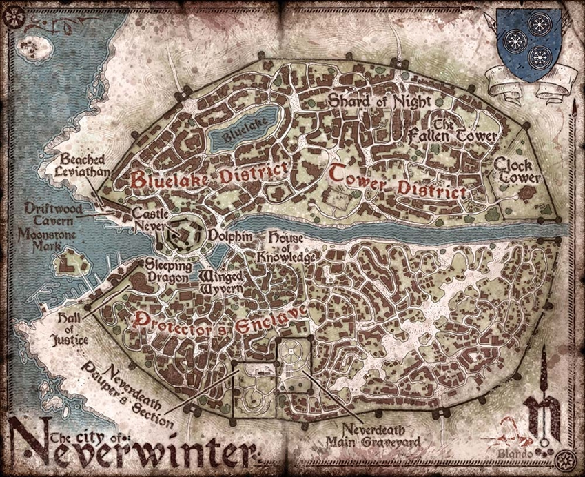

NEVERWINTER
THE JEWEL OF THE NORTH
Neverwinter is the height of civilization in the Great Valley. Known as the City of Skilled Hands, Neverwinter is famous for its artisans, inventions, and refined goods. In the wake of war, Lord Neverember and the Lord's Alliance hope to bring order to the land. The city has a vested interest in the mining efforts of Phandalin and the reclamation of Leilon. While their royal guards may keep the roads safe, are the forces of the great city the end to tyranny or just its new master?
LOCATIONS
Protector's Enclave
Home to Lord Neverember's palace and the merchant quarter. The only part of the city untouched by cataclysm, buildings here resemble the old city.
Blacklake District
This district used to be the old capital of the city. Now, the ruined Castle Never and bandit-filled streets are as corrupt as the polluted lake itself.
Neverdeath Graveyard
The main graveyard to the city. The final resting place for generations of soldiers, craftsmen, and friends.
Tower District
Once a wealthy merchant district known for its three famous towers, post-cataclysm it is home to working-class artisans, servants, and merchants. Only one tower remains: the magical floating Shard of the Moon, now a charming local landmark. It is also known as the River District.
MAP
